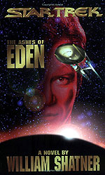
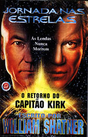
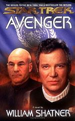
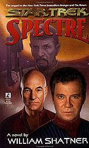
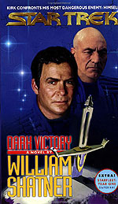
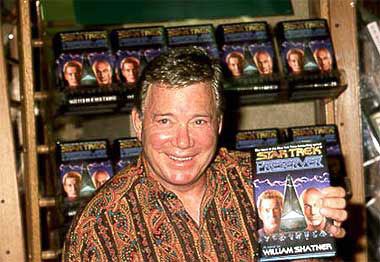
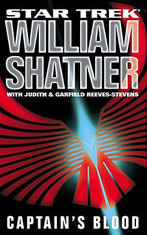
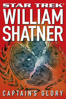

|
Publicado em 5/11/2005

Bring Back Kirk!

| por
Gustavo Leo
Criado por Shatner em colaborao com a dupla de escritores Judith e Garfield Reeves-Stevens, o Shatnerverse se compe de oito livros (até agora), em que James Tiberius Kirk ainda esta vivo no sculo 24 e do alto dos seus 70 e poucos anos, ainda chutando o saco de Borgs e Romulanos e vivendo aventuras ao lado de (ou contra) personagens como Jean-Luc Picard, o embaixador Spock e a almirante Kathryn Janeway. A "Saga do Retorno do Capito Kirk" foi concebida por Shatner em 95, enquanto o filme "Jornada nas Estrelas - Generations" ainda gozava de um relativo sucesso de bilheteria nas telas de cinemas do mundo inteiro. A idia, basicamente tirada da premissa deste filme, o que faz o grande sucesso dos livros: um j aposentado Kirk, agora no sculo 24, com a ajuda de uma nova gerao de heris, volta para combater todo tipo de ameaa e salvar a pátria. Eu lembro que ao ouvir isso, particularmente gostei da idia, j que Generations um filme que eu particularmente adoro (o que diabos eu disse? Eu no sou trekkie! Eu no sou trekkie!), seja pela música vibrante de Dennis McCarthy, ou as brilhantes atuaes de Shatner e Patrick Stewart como Kirk e Picard. E eu j te contei que estes mesmos Kirk e Picard so e sempre sero meus personagens favoritos de todo o universo de Jornada? (Eu no sou trekkie! Eu no sou trekkie!). Mal tinha Generations sado dos cinemas, diz a lenda que Shatner ofereceu à Paramount e a Rick Berman o tal roteiro no qual Kirk retornava a vida, mas Berman e sua chefe Sheri Lansing, duas pessoas que j mostraram publicamente no passado no gostar da Serie Clssica, rejeitaram a idia do pobre Bill em favor do roteiro de Jornada nas Estrelas - Primeiro Contato, onde Picard (e somente ele) ia de encontro aos Borgs. Uma pena, j que se a Paramount tivesse seguido as idias de Shatner, teramos filmes muito melhores do que os produzidos por Berman e sua trupe, evitando horrores como Insurreição e Nêmesis, aberraes que simplesmente mataram a franquia de Jornada nos cinemas.
Como eu j cansei de falar por aqui, eu gosto de Bill Shatner, o homem
que transformou a canastrice em uma forma de arte. Sempre o considerei bom, um
ator expressivo (bem antes dessa boa fase de premiaes por qual ele esta passando),
e uma das mentes criativas responsáveis por grande parte do sucesso e charme
da Série Clssica. Ento, quando ouvi falar de seus livros, claro,
fui dar uma conferida e gastar mais uns trocados em produtos merchandise de Jornada,
uma das coisas que todo trekkie padece (mas, ei, eu no sou trekkie). Que fique
claro aqui que ao comentar sobre esses livros, no estou interessado em fazer
reviews detalhados ou mesmo acurados, j que li a maioria dos livros há
cerca de Okay, voc ainda está ai? Ento, aqui está uma breve lista da saga do retorno do capito Kirk, trazido a nós por ningum menos que Tio Bill Shatner e seus prestigiados colaboradores. Star Trek - The Ashes of Eden (1995)
 O livro comea logo aps os eventos de Generations, com o embaixador Spock visitando os restos mortais de Kirk no topo da montanha em Veridian III. L, Spock se lembra da última aventura que viveu ao lado de Kirk no sculo 23, quando Kirk, apaixonado por uma hbrida romulana/klingon chamada Teilani, tomou comando de uma descomissionada Enterprise-A por uma última vez, e se rebelou contra a prpria Federao e seu maior inimigo, o novo comandante-em-chefe da Frota, o traioeiro almirante Androvar Drake. Entrando em combate contra o capito Sulu e a USS Excelsior, Kirk arrisca tudo para salvar o planeta Chal. Na melhor cena (opa, eu disse cena?) Kirk sacrifica a Enterprise-A, destruindo a nave dentro de uma estrela, aps uma batalha espacial digna de nota. No eplogo do livro, de volta ao presente, o embaixador Spock v os restos mortais de Kirk serem transportados para uma nave romulana na noite de Veridian III. O livro fez tanto sucesso que foi adaptado como graphic-novel de quadrinhos pela DC Comics, com arte sensacional de Steve Erwin. Pronto, estava aberto o caminho para a saga do retorno do capito Kirk. Star
Trek - The Return (1996)  Junto com o capito Picard e sua tripulao, o trio clássico parte para o mundo dos Borgs a bordo de uma nave estelar classe Defiant chamada...Enterprise. O primeiro livro da saga de Kirk no sculo 24, este livro teria sido desenvolvido pelos escritores a partir do tal roteiro criado por Shatner para Jornada 8. E que filme daria passagens como o quebra-pau entre Kirk e Picard e a revelao que VGer era na verdade uma entidade Borg so de tirar o flego. No final do livro, a Federao salva, mas Kirk morre na destruio do mundo Borg. Ser? Star Trek - Avenger (1997)
 O escndalo tamanho que a prpria Frota Estelar fica contra Kirk, incluindo o capito Picard e sua novssima nave estelar, a Enterprise-E. Quem vai vencer a batalha ? Aprenda ingls (isso se você já não sabe...), leia o livro e descubra. Aliás, o livro fez tanto sucesso que diversos aspectos de como os vulcanos rebeldes so representados foram incorporados pelo casal escritor e roteirista Reeves-Stevens no seus episdios do 4º ano de Enterprise. Star Trek - Spectre (1998)  Os j aposentados Kirk e Spock so recrutados de novo pela Frota Estelar para impedir uma possvel invaso do Universo do Espelho. Juntam-se à festa o almirante McCoy e o capito Montgomery Scott. Com sua velha tripulao reunida, Kirk parte no que vai ser a misso de sua vida. No clímax do livro, Kirk, no comando da USS Voyager do Universo do Espelho, tem que enfrentar o Imperador Tiberius o James Kirk do Universo do Espelho e sua nave: a prpria Enterprise-E de Picard! Star Trek - Dark Victory (1999)  A saga do Universo do Espelho ruma para um desfecho dramtico e revelador, algo quase impossvel de se achar na Jornada de Rick Berman (ele de novo!). Star Trek - Preserver (2000) No que possivelmente seu melhor livro, Shatner e os Reeves-Stevens no deixam pedra sobre pedra: do Guardio da Eternidade às naves da Primeira Federao, aos misteriosos Preservers, todo aspecto do universo de Jornada virado e revirado, numa obra adulta e densa. Vale mencionar a batalha entre as duas Enterprise-E dentro de uma imensa doca espacial da Primeira Federao. Isso sim Jornada, seja cnon ou no. No dramtico clmax, Kirk, no comando da Enterprise-E, v sua querida esposa Teilani se sacrificar por ele. Uma obra prima.  Star Trek - Captains Peril (2001) Bom, nada perfeito. E "Captains Peril", o primeiro livro na Trilogia da Totalidade, ruim que di. Nada funciona no livro. Com o fim da Guerra Dominion, Kirk e Picard tiram frias no Planeta Bajor, apenas para se meter com um grupo de cientistas arquelogos e misteriosos ataques. Kirk ento conta para Picard a historia de uma de suas primeiras misses como capito da Enterprise. Enquanto isso, a entidade conhecida como Paz da Totalidade entra em nossa galxia e de quebra destri a U.S.S Monitor. , no se sabe onde Shatner e seus co-autores estavam quando escreveram essa droga. Será que Brannon Braga foi co-autor de Shatner aqui? Esquea este livro. Eu j esqueci. Star Trek - Captains Blood (2003)   Mais coisa vem por ai. Shatner esta prometendo para 2007 uma nova trilogia com o nome de The Academy. Passada na Academia da Frota Estelar, os livros seguiro as aventuras dos cadetes Kirk, Spock e McCoy enquanto eles ainda era adolescentes. Resta saber se isso far sucesso, mas conhecendo Shatner e seus parceiros, a diverso garantida. Bom, se deu certo com "Smallville"... Resta
a dúvida se Shatner escreveu mesmo todos os livros, ou se so apenas os
Reeves-Stevens que produzem as obras e Shatner apenas assinou seu nome. Isso j
foi muito debatido por fãs do mundo inteiro e bom deixar claro: de
Shatner a idia inicial de cada livro. A partir da, os Reeves-Stevens entram
no preo e desenvolvem a idia do Sr. Bill. Assim sendo, o produto final uma
mescla das idias de Shatner e o texto da dupla de escritores. Os Reeves-Stevens
so colaboradores, e no ghost-writes, como se diz por ai. E para quem diz que
Shatner nem chega a ler seus prprios livros, isso mentira: esto disponveis
no mercado americano oito audio-books Jornada morreu? No enquanto produtos, quer dizer, obras criativas como o Shatnerverse pintarem por ai. Se obras literrias como "Harry Potter" e "O Senhor dos Anis" rendem filmes milionrios, por que no aproveitar o filo da boa literatura derivada de Jornada? Enquanto isso, na Paramount Pictures... |
 No
universo expandido de Jornada existe um canto onde a emoo e a aventura
ainda prevalecem, um lugar livre da tirania de Rick Berman e Brannon Braga (o
que uma coluna minha sem falar mal de Berman? Vade retro, Satans!), uma saga
apelidada pelos fãs norte-americanos de Shatnerverse (em português,
"Shatnerverso") . Sim, voc leu direito. Um universo criado por William
Shatner, o nosso bom e velho capito Kirk. No uma maravilha?
No
universo expandido de Jornada existe um canto onde a emoo e a aventura
ainda prevalecem, um lugar livre da tirania de Rick Berman e Brannon Braga (o
que uma coluna minha sem falar mal de Berman? Vade retro, Satans!), uma saga
apelidada pelos fãs norte-americanos de Shatnerverse (em português,
"Shatnerverso") . Sim, voc leu direito. Um universo criado por William
Shatner, o nosso bom e velho capito Kirk. No uma maravilha?